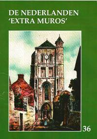

> nieuwsbrief
> JGe jg. - 2e trimester 2014
| Bijdragen over: |
Hernieuwen ledenbijdrage voor 2014
De hernieuwing van de bijdragen voor 2014 verliep
uitzonderlijk vlot. De ledenbijdrage voor 2014 blijft
ongewijzigd en beloopt voor het in mei te verschijnen nieuwe Jaarboek
De Nederlanden extra muros (waarover
verderop in dit nummer méér info) en voor de
driemaandelijkse Nieuwsbrief Zannekin
29 . Vanaf 35 wordt u met dank als steunend lid
geboekt.
Maakt u bij voorkeur gebruik van ons Belgische
zogenaamd Europees rekeningnummer, waarvan de
rekeningoverzichten ons dagelijks meegedeeld worden. Leden
genieten bovendien ook een tastbare vermindering op de
deelnamekosten van de Zannekin-activiteiten.
Studie-uitstap op 26 april naar Longueval in Picardië
We plannen een
dagexcursie naar Longueval. Daar - tussen Atrecht
(Arras) en Amiens - bevindt zich een stukje Zuid-Afrika. Medio
maart verscheen over Longueval een boekje van de hand van Leo
Camerlynck, dat deels in het Afrikaans, deels in het Nederlands
geschreven is.
Als datum voor deze
dagexcursie kozen we zaterdag 26
april 2014
En als programma hebben wij het volgende
uitgewerkt:
08.15 uur: samenkomst
op het Marktplein te Nieuwpoort.
09.15 uur: opstapplaats
te Ieper (station). Vrij parkeren op het terrein van het
voormalige goederenstation (kruispunt
Oudstrijderslaan-Dikkebusseweg) op 100 m van het station).
10.00 uur: opstapplaats te Belle/Bailleul (Huis van het
Nederlands, Ieperstraat - rue d'Ypres) Van daar uit busrit naar
Longueval met een stop onderweg.
11.45 uur: LONGUEVAL:
verwelkoming in het Afrikaans door de heer Thapedi Masanabo,
directeur van het Memoriaal van Delvillebos en bezoek aan het
Memoriaal met de triomfboog en de replica van het Kasteel te
Kaapstad. Vervolgens busrit naar GOUY
13.00 uur in GOUY:
middagmaal en vervolgens wandeling tot
aan de bron(nen) van de Schelde
Aan de bron prijkt deze mooie tekst.
'Felix sorte tua Scaldis fons limpidissime
qui a sacro scaturiens agro
Alluis et ditas nobile Belgium
totque claras urbes lambens
- Gravius Thetidem intras'
'Schelde,
kristalheldere bron, gezegend is uw bestemming
opborrelend uit een
heilige grond
bevloeit en
verrijkt gij de edele Nederlanden
En, kussend vele
beroemde steden
Treedt gij met grote tred in het rijk der
waternimfen'
16.00 uur: koffie en
vervolgens terugrit. Om 18.30 uur: terug in Belle/Bailleul; om
19.00 terug in Ieper; om 20.00 uur terug te Nieuwpoort.
Practisch
Aanmelden - bij
voorkeur via e-post of schriftelijk bij het secretariaar - tot uiterlijk 20 april. Ook uw
bijdrage dient ons voor die datum te bereiken. Deze bedraagt
(alles inbegrepen)
60 /persoon voor leden en hun huisgenoten;
niet-leden betalen 65 /persoon.
Daarin is ook de prijs begrepen van de brochure over Longueval
waarvan hoger sprake.
Jaarboek
De Nederlanden 'extra muros'- 2014
Dit 36e Jaarboek De Nederlanden extra
muros biedt andermaal een keur aan
bijdragen over de territoria die deel uitmaken van ons
Nederlandse kijk op de geschiedenis van onze territoria extra
muros.
Als steeds stellen wij er
prijs op het jaarboek in te leiden met de klassieke tekst waarin
uiteengezet wordt waar het de Vereniging /Stichting Zannekin uiteindelijk om
te doen is, en in welk perspectief wij ook ons jaarboek
plaatsen.
Als blikopener is er de
geopolitieke kijk van de betreurde André
Belmans, die als geen ander geijverd heeft voor
een gezamenlijke toekomst van ons territoriaal erfgoed.
Volgen de bijdragen die van
ver of nabij handelen over de Franse - die wij verkiezen als de
Zuidelijkste Nederlanden te benoemen: ze
handelen respectievelijk over Béthune (Jan van Tongeren), de abdij van Waten
(Cyriel Moeyaert), Michiel de Swaen (Camiel
van Woerkum) en het fort van Mariembourg (Ruud Bruyns).
Volgt, bij wijze van
scharnier, de bijdragen over Hoogstraten,
de historische figuur en de plaats die zijn naam draagt (Luc Pauwels) en andermaal een luik
gewijd aan de verwante
architectuurvormen binnen de Nederlanden en de
aangrenzende gebieden (Zeno Kolks).
Met de bijdragen rond de
sabelsleper Maarten Schenk
(Renaat van Heusden) en de theoloog
Ubbo Emmius (Marten Heida) komen
ook de oostelijke Nederlanden extra muros volop aan bod.
Een apart maar evenzeer
grensoverschrijdend verhaal brengt Paul
van Hauwermeiren, dat handelt over de kramertalen, zijnde het
Bargoens van de destijds rondtrekkende handelslieden, dat ons
van West-Vlaanderen tot in het Rijnland en nog verderop brengt.
Voorafgaand aan de Kroniek en
de boekrecensies leest u nog het summiere verhaal van Leo Camerlynck over de merkwaardige Zuid-Afrikaanse oorlogsgedenksite te
Longueval, nu in Picardië, doch ooit binnen de
zuidelijkste Nederlanden.
Voor het eerst verschijnt het
jaarboek De Nederlanden
extra muros met de meeste illustraties in vierkleurendruk. Een
extra-investering die hopelijk tot een bredere lezersschaar
leidt!
Extra bij dit jaarboek is ook
het overzichtsregister van de vijf vorige jaarboeken, dat deze
editie iets omvangrijker dan gewoonlijk maakt. Daaruit leren we
dat onze jaarboekenreeks tot einde 2013 niet minder dan 377
bijdragen (naast 221 boekrecensie) bundelde rond de Nederlanden
extra muros.
In hun geheel vormen ze
voorwaar een unieke documentatie over ons geestelijk en
nationaal erfgoed.
Onze hernieuwde en niet
geringe dank bij dit alles aan het adres van onze medewerkers,
temeer daar allen pro deo bijdragen tot de uitstra-ling van
ons jaarboekenproject. Zonder hen hadden waren we voorwaar niet
aan deze 36e editie toegekomen!
PS.
Verwijzend naar het summiere verhaal van Leo Camerlynck rond de
Zuif-Afrikaanse oorlogssite te Longueval in Picardië willen we
er op wijzen dat dit verhaal meer uitgebreid aan bod komt in een
aparte tweetalige (Nederlands-Zuid-Afrikaans) en overvloedige
geïllustreerde ZANNEKIN-brochure
van 36 paginas. Mit overboeking van 5 (verzending inbegrepen)
op een van onze rekeningen krijgt u de brochure toegestuurd.
Tweede brief uit Brugge aan Zee
in t Brugse Vrije, in t jaar 1604
De
watergeuzen zijn geland en onze zeearm is verzand.
De boten
in de grijze verte worden groter dan groot
en schepen
vergaan en zinken als een zwaar beladen boot.
De pijl
van de tijd zoeft voorbij en valt achter het achterland.
Grotius en
de vromen geloven in de Heiland en zijn woord.
Dwepers,
dopers, volgelingen van Menno Simons en Calvijn
raken
verstrikt in schorren en slikken en worden vermoord
en na een
tijd zal geen bosgeus nog ergens veilig zijn.
Het weer
is hard want de wind giert hier als een dwingeland.
Diepe
beken en brede kreken leiden naar de wilde vloed
en Sluis
wordt ontzet door Spinola uit het Spanjolenland.
Oostende,
het nieuwe Troje, met dat laatste geuzengebroed
weerstaat
vier jaar aan de belegering van de vijand
en Cadzand
is een eiland zonder eilanders met have en goed.
Cyriel
Moeyaert en Mark Ingelaere
* Het Woordenboek van het
Frans-Vlaams was een tijdje geleden
uitverkocht. Het is nu weer verkrijgbaar tegen 21 . In
Frans-Vlaanderen is het te koop in Het Huis van de Veldslag
in Noordpene. Ook Nieuw Oud Vlaams,
het bijvoegsel bij het Woordenboek, is herdrukt. Het is ook in
het Huis van de Veldslag
verkrijgbaar. Het kost 10 .
* het
oktobernummer van het Bulletin du Comité
Flamand de France (nr. 91-92) publiceerde
Christian Ghillebaert van Steenvoorde een sterk gedocumenteerd
artikel over lAbbé Jules Andouche, préfet de lindiscipline,
begraven in zn geboortedorp Berten. Hij vermeldt drie
grafstenen waarop de leuze van Guido Gezelle staat Wees Vlaming dien God Vlaming schiep.
De oudste , die op het graf van René Schodduyn in Ambleteuse
(Ambletuwe) uit 1937, die van Jules Andouche in Berten uit 1948
en die van Gantois, enkele jaren na zn zn dood in 1968.
Sinds-dien is een bij gekomen, op het grafkruis van Renaat
Despicht (1960) in Steenvoorde staat sinds enige tijd diezelfde
leuze, aangebracht door de Werkgroep de Nederlanden. Wat dat
indiscipline te betekenen heeft is me niet duidelijk. Toch
nooit dat Andouche als surveillant in Haze-broek het Vlaams
spreken van de scholieren dat verboden was, door de vingers zag.
Opmerkelijk in dit artikel over Jules Andouche is voetnoot 6 waarin Christiane Ghillebaert ons zegt welke studies over de Vlaamse Beweging in Frankrijk volgens hem traditioneel betrouwbaar zijn. Daarin staat Erik Defoort en ook Etienne Dejonghe. In mn bespreking van Defoorts boek Une châtelaine Flamande, Marie Thérèse le Boucq de Ternas heb ik Defoort gewezen op zn vooringenomen standpunt door een te groot vertrouwen in E. Dejonghe en zn artikel Un